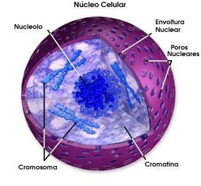

El núcleo es un organelo sumamente especializado que sirve de centro de administración e información de la célula. Este organelo tiene dos funciones principales. Contiene el material hereditario de la célula, o ADN, y coordina las actividades de la célula, como el metabolismo, crecimiento, síntesis de proteínas, y reproducción(división celular).